Casa costruita sul terreno del coniuge: si recupera la spesa dopo la separazione?
Chi finanzia una casa costruita sul terreno di proprietà del coniuge rischia di non recuperare nulla al momento della separazione. La Corte d'Appello di Cagliari qualifica quelle s…

Proscioglimento per tenuità e condanna al risarcimento: l'appello negato all'imputato
L'imputato prosciolto per tenuità del fatto ma condannato al risarcimento in favore della parte civile non può proporre appello sul capo civile: gli resta solo il ricorso in Cassaz…

Vivere nella casa del genitore defunto significa accettare l'eredità?
Continuare ad abitare nella casa di un genitore scomparso è una situazione frequente e delicata. Molti temono che la sola permanenza equivalga ad accettare l'eredità, con tutti i d…

Lavoro domestico e incidenti: il risarcimento del danno patrimoniale
Una recente pronuncia della Corte di Cassazione riconosce il danno patrimoniale da ridotta capacità di svolgere il lavoro domestico, anche senza dimostrare l'impiego di collaborato…

Patto di famiglia: quando l'esenzione fiscale salta se il controllo resta al genitore
L'Agenzia delle Entrate torna sui patti di famiglia con un chiarimento destinato a incidere sui passaggi generazionali d'impresa: l'esenzione da imposta di donazione non si applica…

Caduta in RSA: la responsabilità contrattuale della struttura verso il paziente
Il Tribunale di Nola ha condannato una RSA a risarcire gli eredi di un paziente deceduto dopo una caduta dal letto. La decisione ribadisce un principio consolidato: tra struttura e…

Sequestro preventivo e profitto non conseguito: i limiti fissati dalla Cassazione
La Cassazione affronta un tema patrimoniale delicato: entro quali limiti il sequestro preventivo finalizzato alla confisca può estendersi a un profitto non ancora incassato dall'in…

Casa costruita sul terreno altrui: si possono recuperare le spese dopo la separazione?
Chi finanzia la costruzione di una casa su un terreno di proprietà altrui, spesso dei suoceri, rischia di non recuperare nulla in caso di separazione. Lo ha ribadito la Corte d'App…

L'intervento dei creditori nella procedura esecutiva
Quando un creditore avvia un'esecuzione forzata, gli altri creditori possono inserirsi nella stessa procedura per soddisfarsi sul ricavato. Ma le condizioni di accesso, i termini e…

Sanatoria edilizia e violazioni antisismiche: la sanatoria non cancella le sanzioni penali
La regolarizzazione urbanistica di un immobile non basta a cancellare le responsabilità per opere realizzate in zona sismica senza le necessarie autorizzazioni. La giurisprudenza t…

Assoluzione penale e risarcimento per calunnia: quando spetta davvero
Essere assolti in un processo penale non significa poter ottenere automaticamente il risarcimento dei danni dal denunciante. Il Tribunale di Ferrara ribadisce un principio spesso f…

Ammonimento per stalking: il Questore può agire senza condanna penale
Il TAR Marche ha ribadito un principio consolidato: l'ammonimento per stalking non richiede una sentenza penale di condanna. Al Questore basta un quadro indiziario grave e concorda…

La polizia può accedere al tuo PC senza autorizzazione del giudice?
La polizia può guardare dentro il tuo computer senza che un giudice lo abbia autorizzato prima? La risposta non è secca. In casi di urgenza l'accertamento è possibile, ma con vinco…
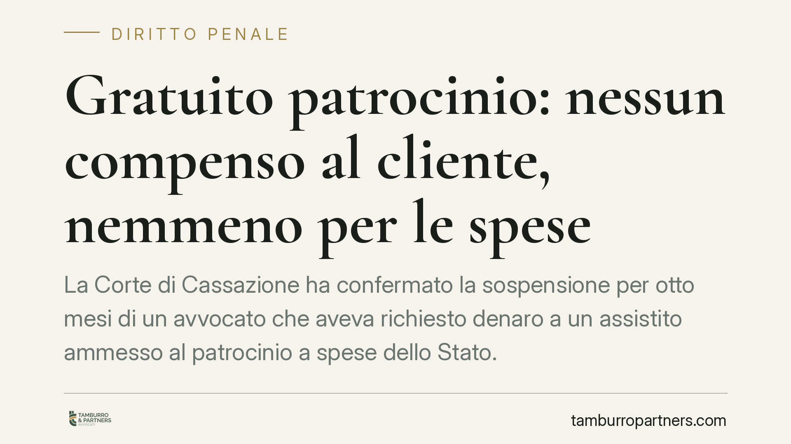
Gratuito patrocinio: nessun compenso al cliente, nemmeno per le spese
La Corte di Cassazione ha confermato la sospensione per otto mesi di un avvocato che aveva richiesto denaro a un assistito ammesso al patrocinio a spese dello Stato. Il divieto è i…
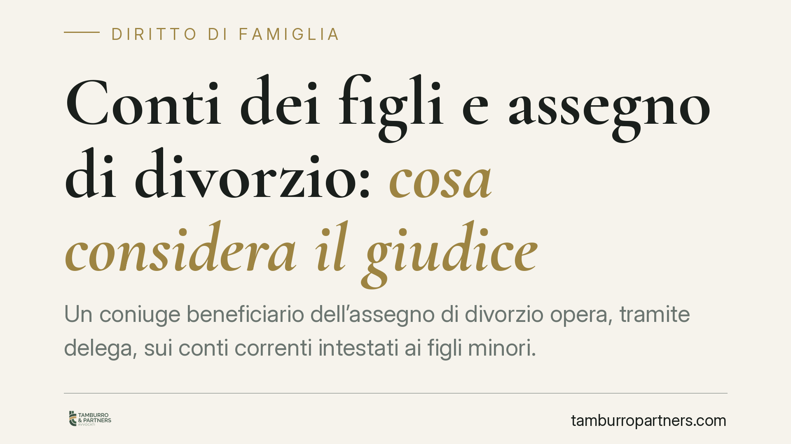
Conti dei figli e assegno di divorzio: cosa considera il giudice
Un coniuge beneficiario dell'assegno di divorzio opera, tramite delega, sui conti correnti intestati ai figli minori. Quelle movimentazioni possono incidere sulla misura dell'asseg…
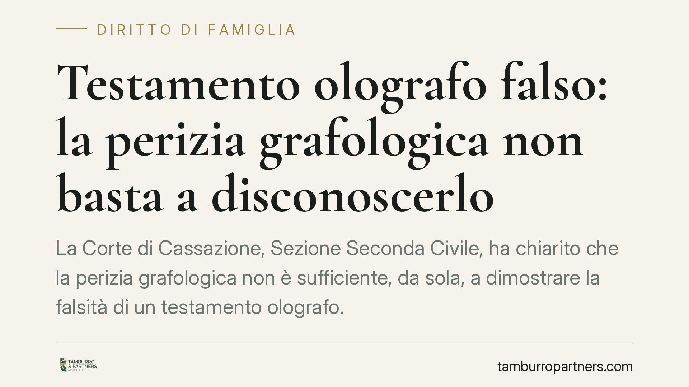
Testamento olografo falso: la perizia grafologica non basta a disconoscerlo
La Corte di Cassazione, Sezione Seconda Civile, ha chiarito che la perizia grafologica non è sufficiente, da sola, a dimostrare la falsità di un testamento olografo. Il giudice dev…
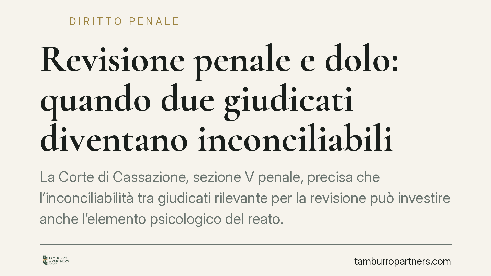
Revisione penale e dolo: quando due giudicati diventano inconciliabili
La Corte di Cassazione, sezione V penale, precisa che l'inconciliabilità tra giudicati rilevante per la revisione può investire anche l'elemento psicologico del reato. Quando il do…
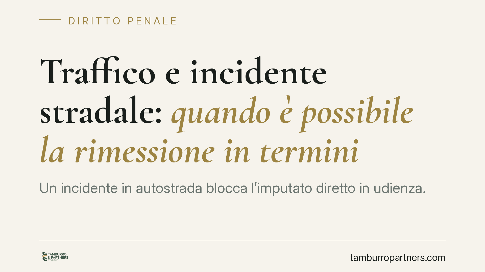
Traffico e incidente stradale: quando è possibile la rimessione in termini
Un incidente in autostrada blocca l'imputato diretto in udienza. È causa non imputabile che consente la restituzione nel termine? La giurisprudenza distingue l'evento imprevedibile…
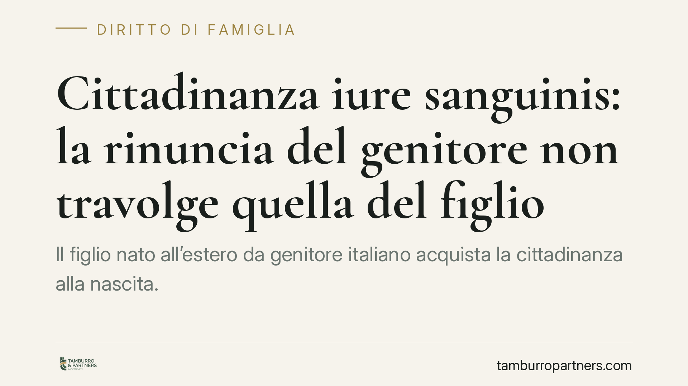
Cittadinanza iure sanguinis: la rinuncia del genitore non travolge quella del figlio
Il figlio nato all'estero da genitore italiano acquista la cittadinanza alla nascita. Una recente pronuncia ribadisce che, una volta acquisito, quello status è autonomo: la rinunci…
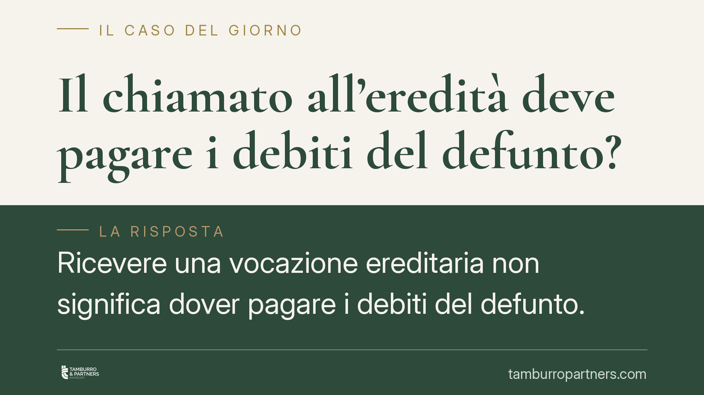
Il chiamato all'eredità deve pagare i debiti del defunto?
Ricevere una vocazione ereditaria non significa dover pagare i debiti del defunto. La Corte di Cassazione ha ribadito un principio decisivo: solo chi accetta l'eredità, in modo esp…
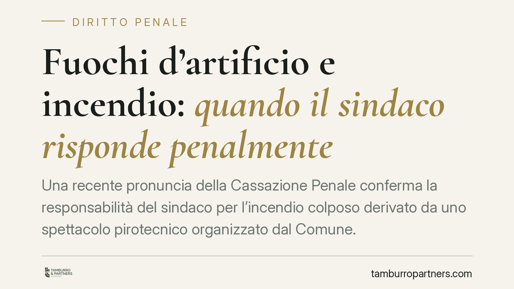
Fuochi d'artificio e incendio: quando il sindaco risponde penalmente
Una recente pronuncia della Cassazione Penale conferma la responsabilità del sindaco per l'incendio colposo derivato da uno spettacolo pirotecnico organizzato dal Comune. Il punto …
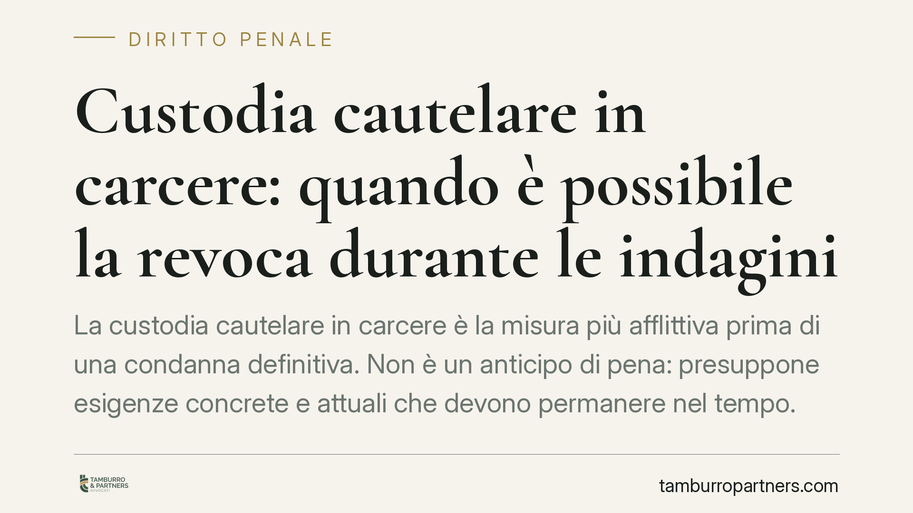
Custodia cautelare in carcere: quando è possibile la revoca durante le indagini
La custodia cautelare in carcere è la misura più afflittiva prima di una condanna definitiva. Non è un anticipo di pena: presuppone esigenze concrete e attuali che devono permanere…
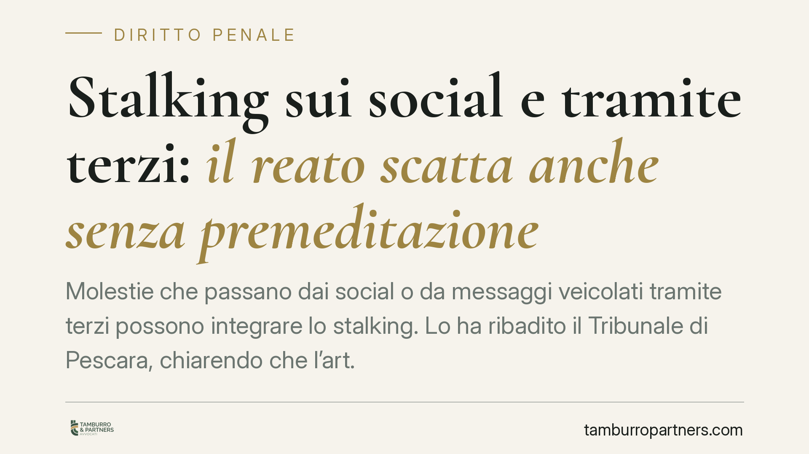
Stalking sui social e tramite terzi: il reato scatta anche senza premeditazione
Molestie che passano dai social o da messaggi veicolati tramite terzi possono integrare lo stalking. Lo ha ribadito il Tribunale di Pescara, chiarendo che l'art. 612-bis del codice…
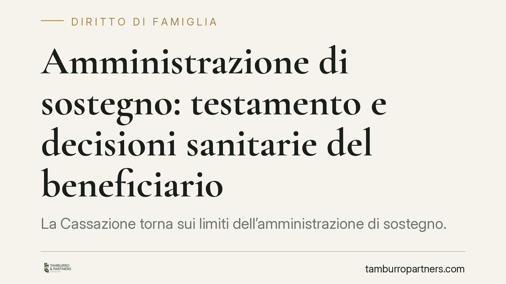
Amministrazione di sostegno: testamento e decisioni sanitarie del beneficiario
La Cassazione torna sui limiti dell'amministrazione di sostegno. Nei casi di grave deterioramento cognitivo, l'amministratore può sostituire il beneficiario in alcune decisioni san…
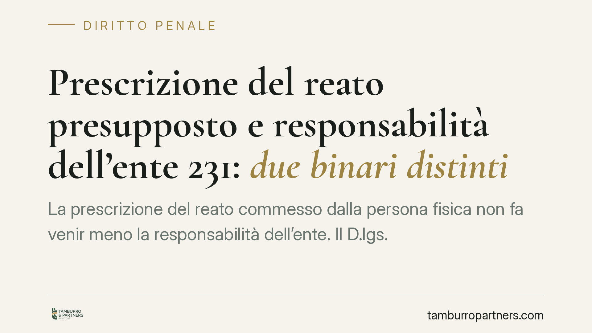
Prescrizione del reato presupposto e responsabilità dell'ente 231: due binari distinti
La prescrizione del reato commesso dalla persona fisica non fa venir meno la responsabilità dell'ente. Il D.lgs. 231/2001 costruisce due binari distinti: l'illecito dell'ente ha vi…
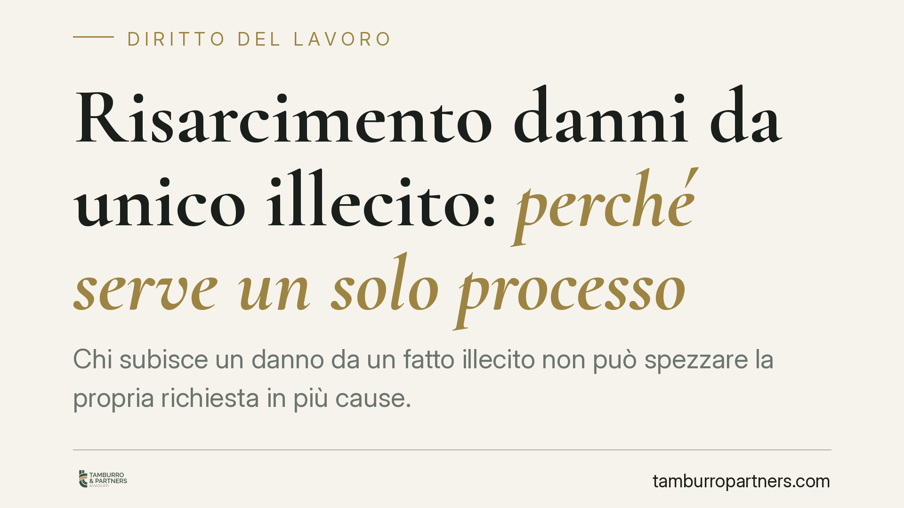
Risarcimento danni da unico illecito: perché serve un solo processo
Chi subisce un danno da un fatto illecito non può spezzare la propria richiesta in più cause. La Cassazione, in linea con le Sezioni Unite, ribadisce che le diverse voci di danno d…
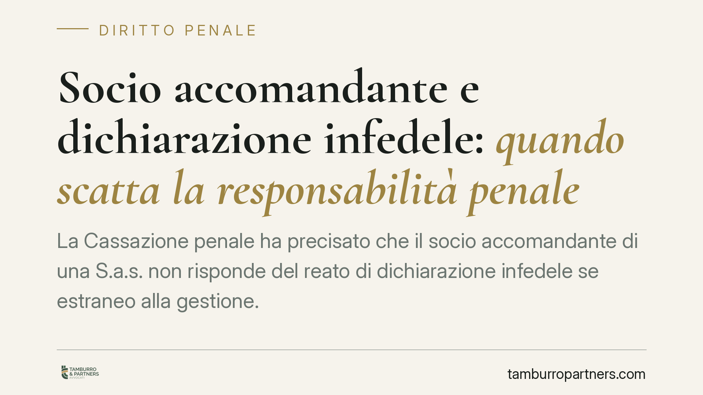
Socio accomandante e dichiarazione infedele: quando scatta la responsabilità penale
La Cassazione penale ha precisato che il socio accomandante di una S.a.s. non risponde del reato di dichiarazione infedele se estraneo alla gestione. La responsabilità penale segue…
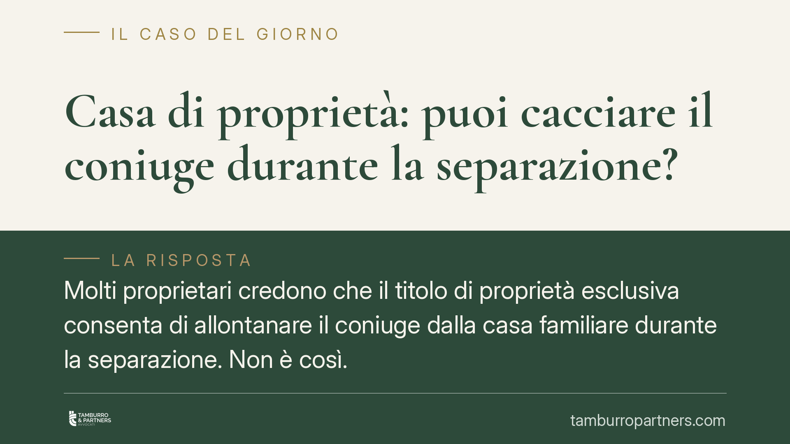
Casa di proprietà: puoi cacciare il coniuge durante la separazione?
Molti proprietari credono che il titolo di proprietà esclusiva consenta di allontanare il coniuge dalla casa familiare durante la separazione. Non è così. Il coniuge che vive nell'…
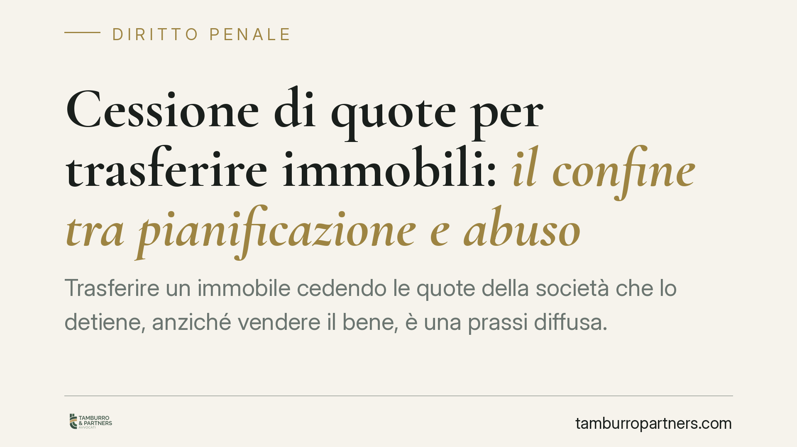
Cessione di quote per trasferire immobili: il confine tra pianificazione e abuso
Trasferire un immobile cedendo le quote della società che lo detiene, anziché vendere il bene, è una prassi diffusa. La giurisprudenza tende a escludere l'abuso del diritto quando …
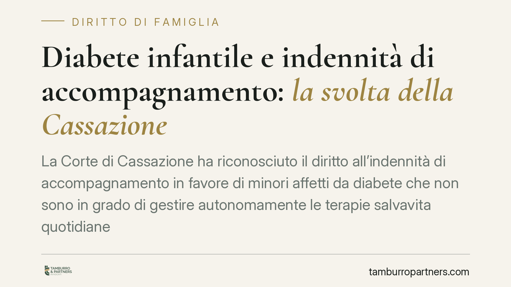
Diabete infantile e indennità di accompagnamento: la svolta della Cassazione
La Corte di Cassazione ha riconosciuto il diritto all'indennità di accompagnamento in favore di minori affetti da diabete che non sono in grado di gestire autonomamente le terapie …